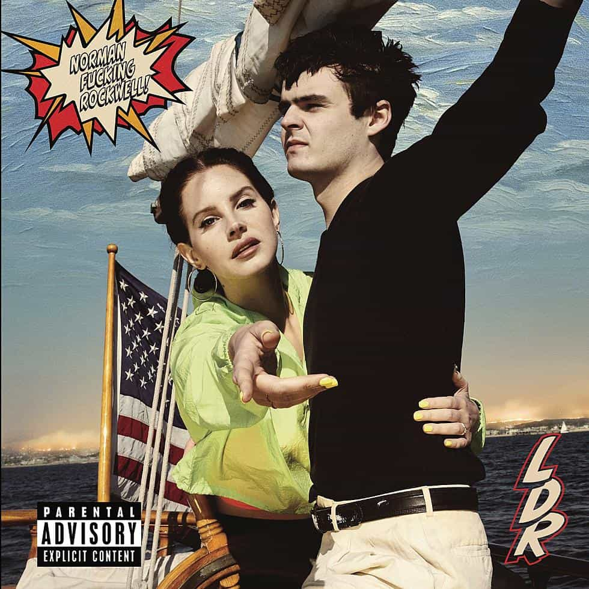

Norman F**king Rockwell!
2019
Norman F**king Rockwell is the single best studio album by Dex's most listened to artist of every year since 2014 according to Spotify Wrapped: Lana Del Rey. This album deals with American culture in decline, yet the singer never gives up hope on the country she loves dearly. The lyrics are poetic prose and much more mature than her previous albums. Her vocals are that of a lounge singer that no longer exists in the mainstream. She's the definition of cool. The only reason this ranks third, honestly, is because there is one song ('Cinnamon Girl') that doesn't tickle Dex's fancy. If it weren't for that, this might be #1 or #2 on the list.